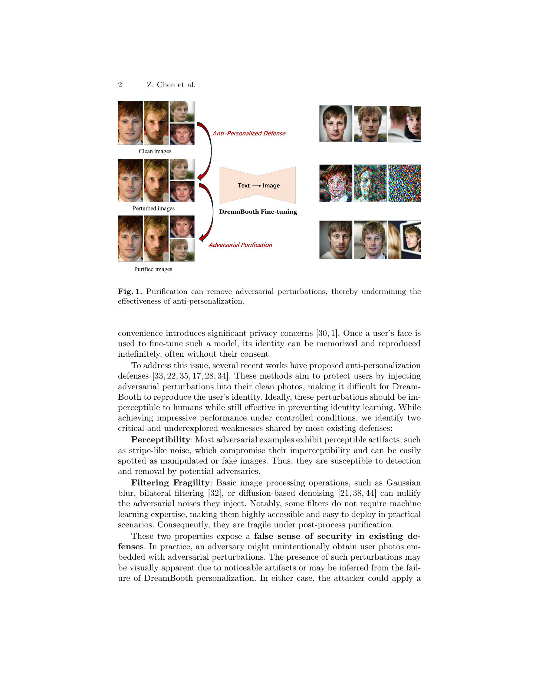

Problem
解决的问题
DreamBooth 等个性化生成技术会从用户照片中学习身份特征，带来人脸身份泄露风险。已有 Anti-DreamBooth 一类防御通过给照片加入对抗扰动来阻止个性化，但这些扰动是否真的在真实上传、压缩、滤波等场景中稳定有效，仍缺少系统评估。
Research on Generative Models · 2026 · AAAI
Fragile by Design On the Limits of Adversarial Defenses in Personalized Generation
Problem
DreamBooth 等个性化生成技术会从用户照片中学习身份特征，带来人脸身份泄露风险。已有 Anti-DreamBooth 一类防御通过给照片加入对抗扰动来阻止个性化，但这些扰动是否真的在真实上传、压缩、滤波等场景中稳定有效，仍缺少系统评估。
Value
它更像一篇安全边界论文：不是提出更强防御，而是证明现有防御的关键假设在现实条件下站不稳。
Extracted Figure Page
该图直观展示：用户图片上的对抗扰动原本能阻止 DreamBooth 记住身份，但经过简单净化后，模型又能恢复个性化生成能力。
打开原文第 2 页
Technical Route
Innovation